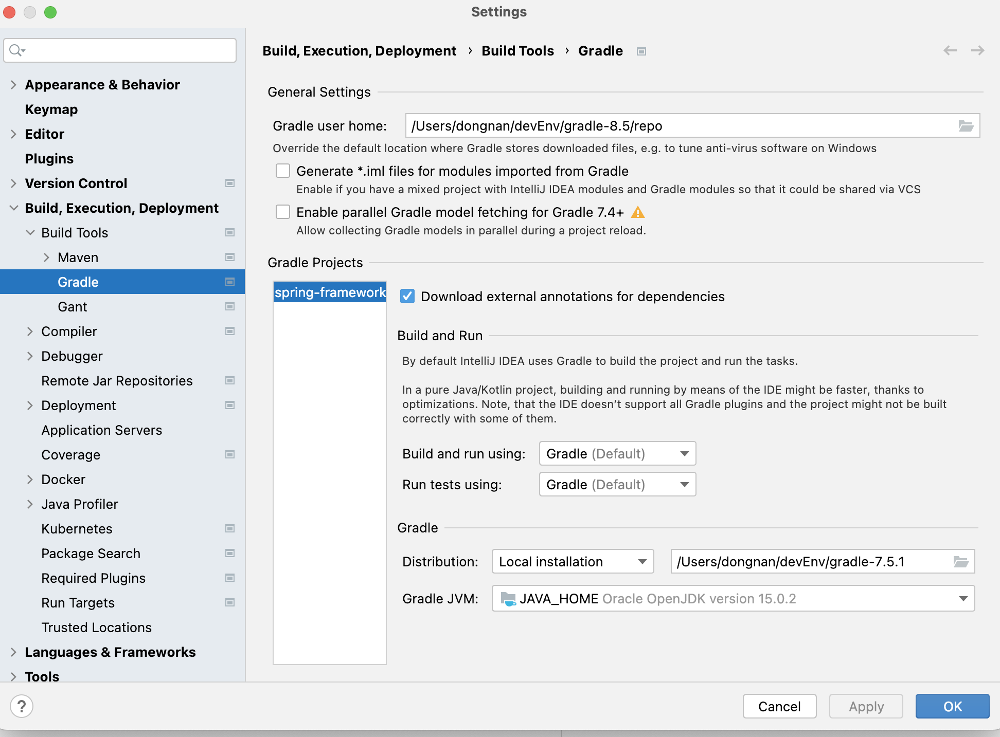
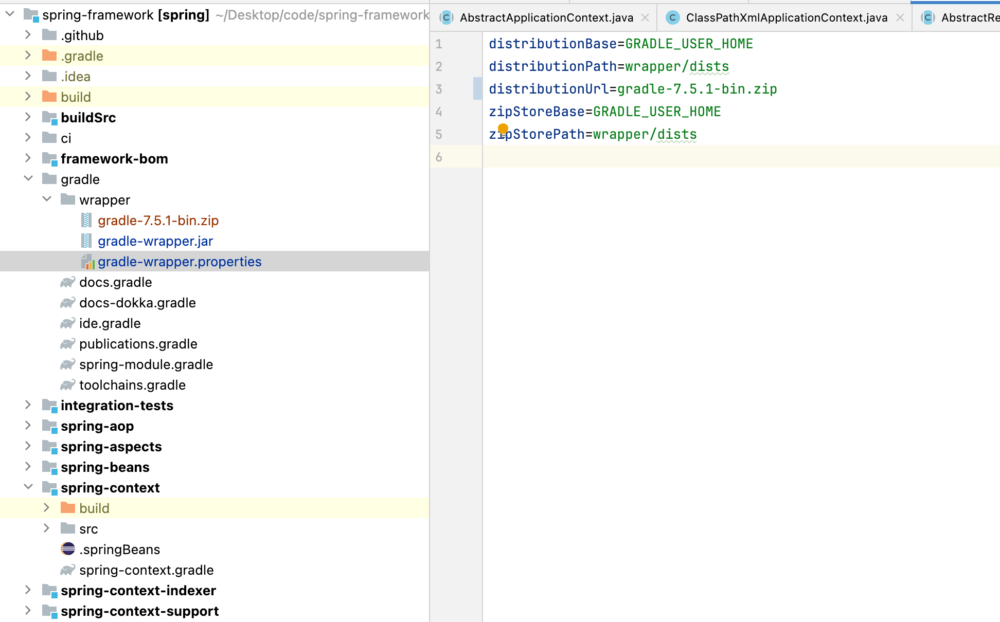
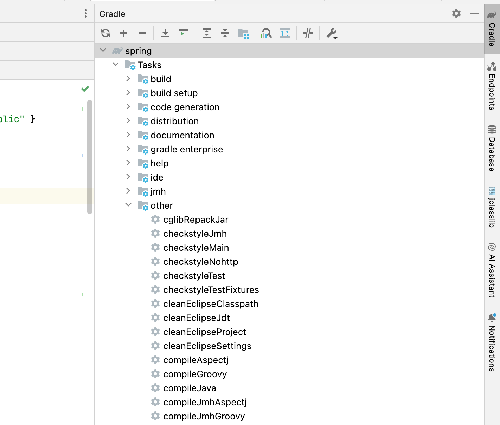
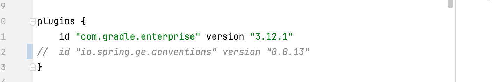
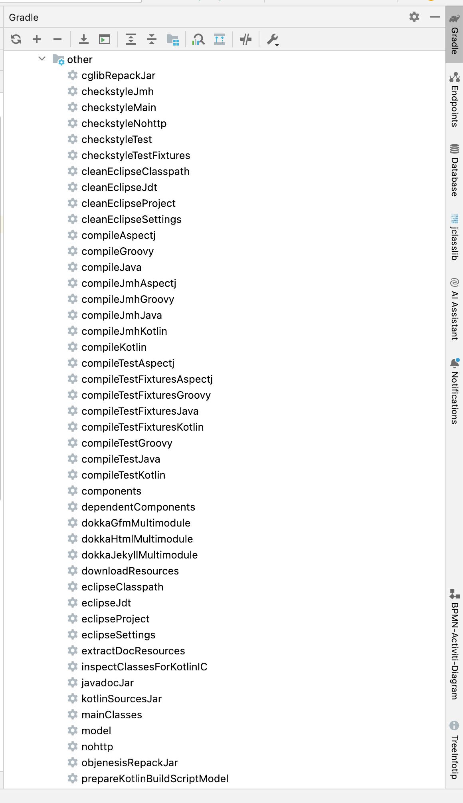
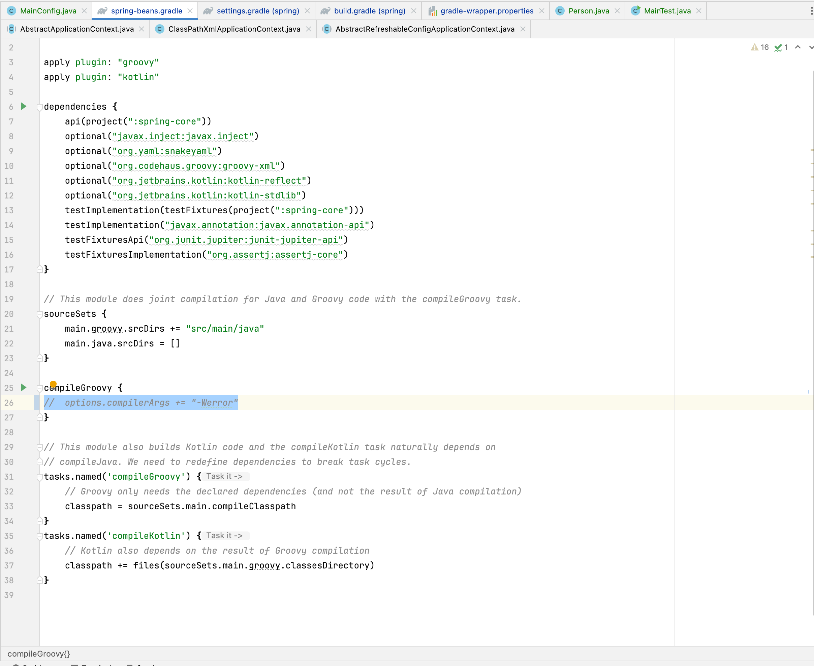
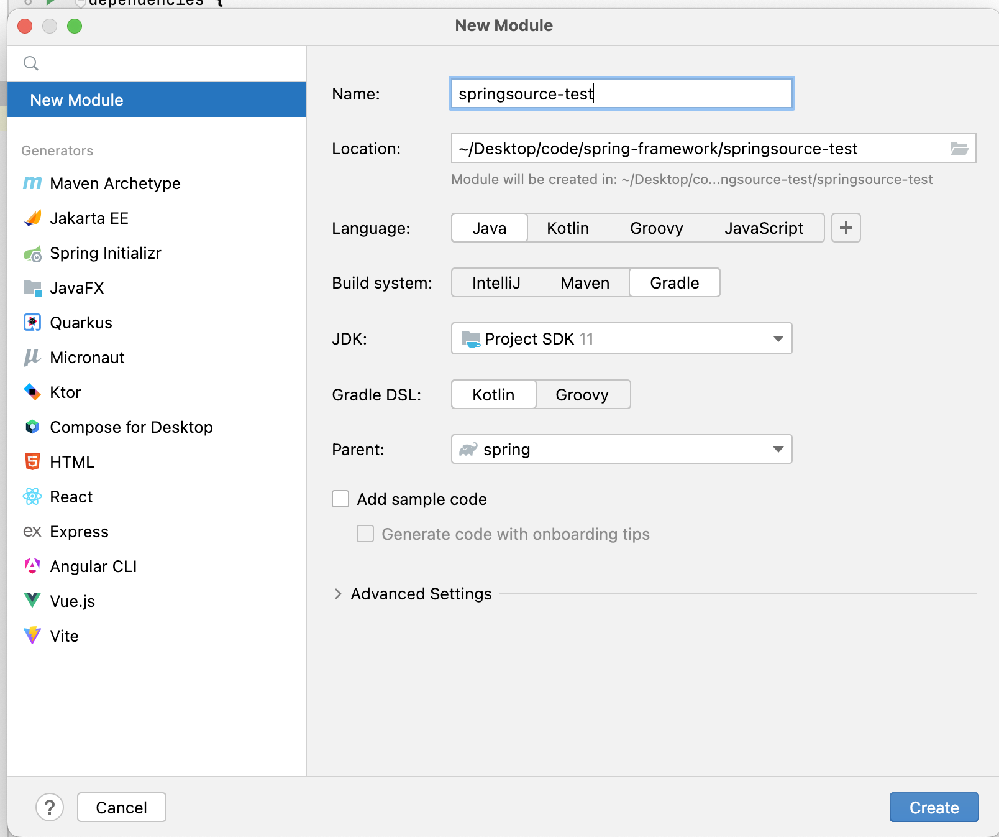

Spring5.3.X源码环境搭建
一、准备阶段
Spring5.3.X
JDK11:https://www.oracle.com/java/technologies/downloads/#java11
Gradel:7.5.1:https://gradle.org/releases/
IDEA
克隆代码
Gitee:https://gitee.com/mirrors/spring-framework
GitHub:https://github.com/spring-projects/spring-framework
具体方法不再赘述
二、修改配置
2.1、修改Gradle配置
- 修改 源码根目录下settings.gradle 文件，添加上阿里云的 maven 仓库
maven { url "https://maven.aliyun.com/repository/public" }
|
- 修改 源码根目录下的build.gradle文件，添加上阿里云的 maven 仓库
maven { url 'https://maven.aliyun.com/repository/public' }
maven { url 'https://maven.aliyun.com/repository/gradle-plugin'}
|

2.2、修改ideaGradle配置

导入spring5源码的时候，会自动下载gradle的版本，建议大家直接让idea去拉取gradle的版本（我们配置了阿里云镜像，大概十几分钟），gradle的版本和spring5的版本不匹配，会有各种各样的问题，建议大家这么操作。
2.2.1 本地下载
这一步一定要注意一点，你的gradle版本不要自己去搜索最新版本的安装，一定要按照你clone下来的代码中官方所用的版本来，具体到这里，在clone下来的代码对应分支的gradle包下，有一个gradle-wrapper.properties文件中的如下参数指定：

2.3、导入依赖
此时可以导入Gradle的依赖

2.3.1、异常情况
出现’io.spring.gradle-enterprise-conventions’ version ‘0.0.2’ 相关异常的话，可以直接在根目录的build.gradle注释掉它：

Kotlin: warnings found and -Weeror specified
缺少cglib、objenesis包，解决步骤如下：双击加载cglibRepackJar和objenesisRepackJar；

==若上述操作后，依旧报错，可使用如下强制措施，关闭Kotlin的-Weeror校验，删除-Weeror。==

==！！！！！如果依旧报错，注释掉Spring-beans.gradle配置文件的 options.compilerArgs += “-Werror”==

三、测试阶段
1、使用gradle创建一个新模块
jdk一定要和项目的jdk相同！！！

2、在Resource目录下创建beans.xml配置文件
<?xml version="1.0" encoding="UTF-8"?>
<beans xmlns="http://www.springframework.org/schema/beans"
xmlns:xsi="http://www.w3.org/2001/XMLSchema-instance"
xsi:schemaLocation="http://www.springframework.org/schema/beans http://www.springframework.org/schema/beans/spring-beans.xsd">
<bean class="com.miller.test.bean.Person" id="person">
<property name="name" value="张三"/>
</bean>
<bean class="com.miller.test.bean.Cat" id="cat" >
<property name="name" value="张三的猫"/>
</bean>
</beans>
|
3、新建一个person类
package com.miller.test.bean;
import org.springframework.beans.BeansException;
import org.springframework.beans.factory.annotation.Autowired;
import org.springframework.beans.factory.annotation.Lookup;
import org.springframework.context.ApplicationContext;
import org.springframework.context.ApplicationContextAware;
import org.springframework.context.MessageSource;
import org.springframework.context.MessageSourceAware;
import org.springframework.stereotype.Component;
@Component
public class Person implements ApplicationContextAware, MessageSourceAware {
ApplicationContext context;
MessageSource messageSource;
public Person(){
System.out.println("person创建....");
}
private String name;
private Cat cat;
public void setName(String name) {
this.name = name;
}
public String getName() {
return name;
}
@Autowired
public void setCat(Cat cat) {
this.cat = cat;
}
@Lookup
public Cat getCat() {
return cat;
}
@Override
public String toString() {
return "Person{" +
"name='" + name + '\'' +
'}';
}
public ApplicationContext getContext() {
return context;
}
@Override
public void setApplicationContext(ApplicationContext applicationContext) throws BeansException {
this.context = applicationContext;
}
@Override
public void setMessageSource(MessageSource messageSource) {
this.messageSource = messageSource;
}
}
|
4、创建一个main方法
package com.miller.test;
import com.miller.test.bean.Person;
import org.springframework.context.support.ClassPathXmlApplicationContext;
import java.io.IOException;
public class MainTest {
public static void main(String[] args) throws IOException {
ClassPathXmlApplicationContext context = new ClassPathXmlApplicationContext("beans.xml");
Person bean = context.getBean(Person.class);
System.out.println(bean);
}
}
|
四、大功告成
执行main方法，等待一段时间，第一次编译比较慢。。。。。
如果出现以下输出，说明搭建成功，剩下的就是一入源码深似海，从此Spring不再是路人。。。


 wechat
wechat alipay
alipay